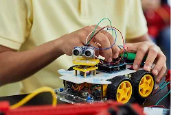
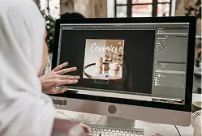
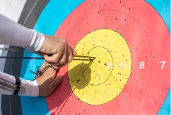
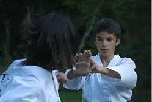

Pilar Kurikulum
Pilar Kurikulum
Sekolah Menengah Pertama (SMP)
Karakter Islami
Membentuk siswa yang berakhlak, peduli, beriman, dan berwawasan melalui pembiasaan ibadah dan pendidikan karakter.
Riset & Berpikir Kritis
Melatih siswa untuk meneliti, menganalisis, berkomunikasi, berkolaborasi, dan menghasilkan karya ilmiah.
Mandiri & Kepemimpinan
Mengembangkan rasa tanggung jawab, kemampuan bekerja sama, dan keterampilan memimpin.
Keterampilan Digital
Membekali siswa dengan kemampuan coding, robotik, desain, fotografi, bahasa asing, jurnalistik, seni, dan olahraga.
Program Unggulan
Program Unggulan
Sekolah Menengah Pertama (SMP)
Alazka Quranic
Camp
Membimbing siswa meningkatkan kemampuan membaca, menghafal, dan mengamalkan Al-Qur'an.

Alazka Student
Scouts
Melatih kemandirian, kedisiplinan, kerja sama, dan dasar-dasar kepemimpinan siswa.

Alazka Basic
Research
Mengajak siswa melakukan penelitian sederhana untuk melatih kemampuan berpikir kritis.

Alazka Game &
Competition
Mengembangkan kreativitas, kerja sama, dan kemampuan siswa dalam mengelola kompetisi sekolah.

Ekstrakurikuler Unit
Ekstrakurikuler & Intrakurikuler
Sekolah Menengah Pertama (SMP)

Coding
Melatih logika, kreativitas, dan kemampuan memecahkan masalah.

Robotik
Mengembangkan teknologi perakitan dan pengoperasian robot.
Fotografi
Melatih kepekaan visual dan kreativitas dalam menangkap momen.

Desain Grafis
Mengembangkan kemampuan mengolah ide menjadi karya visual.

Fashion Design
Mengenalkan proses merancang busana dengan kreativitas anak.

Tari Tradisional
Mengenalkan budaya Indonesia melalui gerak dan ekspresi.

Sains Experiment
Mengajak siswa memahami sains melalui percobaan sederhana.

Tahfidz Al-Quran
Membimbing siswa menghafal Al-Quran secara bertahap.

Panahan
Melatih fokus, ketepatan, disiplin, dan pengendalian diri.

Silat
Mengembangkan ketahanan fisik, disiplin, dan keterampilan bela diri.
Fasilitas Unit
Fasilitas Unggulan
Sekolah Menengah Pertama (SMP)
 Fasilitas 1
Fasilitas 1Ruang Kelas
Menciptakan suasana belajar yang interaktif dan nyaman.
 Fasilitas 2
Fasilitas 2Masjid Sekolah
Menumbuhkan iman dan akhlak melalui lingkungan ibadah yang nyaman.
 Fasilitas 3
Fasilitas 3Studio Musik
Mengembangkan kreativitas dan bakat dalam bermusik.
 Fasilitas 4
Fasilitas 4Perpustakaan Anak
Menghadirkan ruang membaca untuk menumbuhkan literasi.
 Fasilitas 5
Fasilitas 5Lapangan Olahraga
Ruang aktif untuk berolahraga dan membangun sportivitas.
 Fasilitas 6
Fasilitas 6Kolam Renang
Mendukung kebugaran dan keterampilan berenang dengan aman.
 Fasilitas 7
Fasilitas 7Greenhouse Anak
Mengenalkan kepedulian lingkungan melalui pembelajaran langsung.
 Fasilitas 8
Fasilitas 8Kantin Anak
Menyediakan makanan bergizi dalam lingkungan yang nyaman.
Fasilitas 9
UKS
Memberikan layanan kesehatan dasar, pertolongan pertama, serta edukasi pola hidup bersih dan sehat.
Daftarkan Putra-Putri Anda
Bergabunglah dengan keluarga besar Al-Azhar Kelapa Gading dan buka potensi terbaik ananda sejak usia dini.